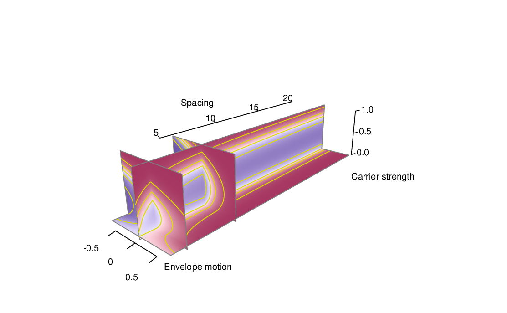
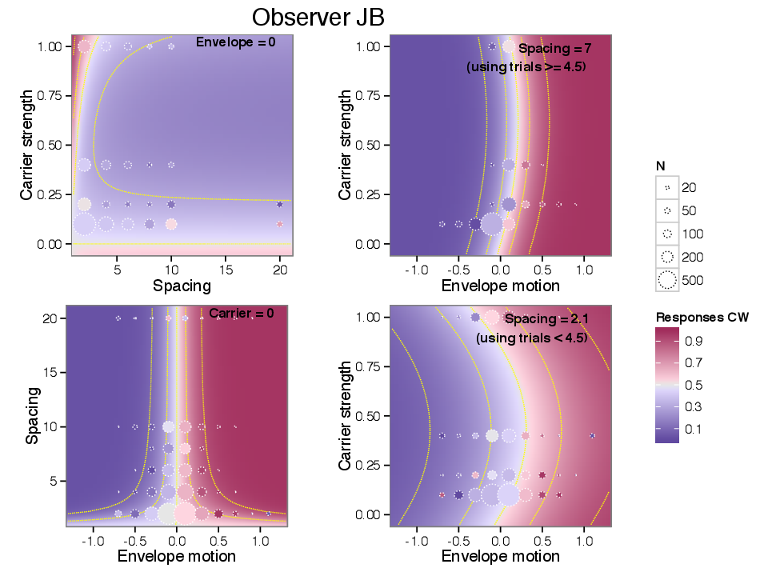

In this section I show the complete collection of model and diagnostic plots for all observers.
The following figures illustrate the main effects of the motion model described in Section 4 as fitted to each observer’s data. They are formatted identically to Figure 5.3 and Figure 5.4, as described in § 5.3.


Figure 8.23 depicts the sensitivity measure βΔx(s) as a function of spacing. The construction of the measure and the figure is the same as described in § 5.4.3.
Figure 8.24 measures the spacing-dependent summation of carrier motion, denoted in the model as MS for all observers who participated in the experiment. The construction is described in § 5.2.2.
Figure 8.25 depicts the repulsion to carrier motion MI for all observers who participated in the experiment. The construction is described in § 5.4.6.
Figure 8.26 compares four model predictions for data from Experiment 2, as described in § 6.2.2.